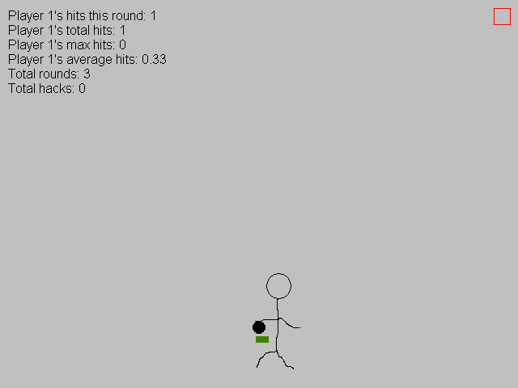

Hacky Sack Videogame
Back in 2009, a lot of people my age, myself included, liked to play the game where you kick around a footbag ("hacky sack") at each other. I personally also liked to juggle a footbag with my feet on my own, so I decided to make a video game version. Unfortunately, I used the proprietary Game Maker 7 game engine, and I never released the source code to the "Hacky Sack Videogame".
On its own merits, it was a fun game, fun enough that it's something I have an interest in re-making in an ethical way.
Since I hosted the binaries on web hosts that no longer exist (such as Will Host For Food, which was popular at the time), no copies of this game exist anymore.
Screenshots
